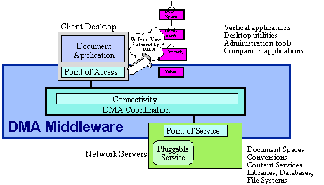

Figure -1 Basic Client-Server Distribution Model
Access to a DMA system is provided through symmetrical points of access (where clients interact with the DMA system) and points of service (where service elements are operated under the DMA system). DMA-compliant middleware manages the distribution of access, so that clients and servers can be located on the same platform, on different systems on a network, on different networks, or at remote points of an enterprise or inter-enterprise wide-area network. From the client point of view, DMA provides a uniform view of all types of documents, regardless of location, creation method, etc.
Although we tend to think of clients and services as residing on different platforms over a network for DMA it is valuable to think of both client applications and service elements as all residing at a DMA point of presence.
Figure -2 Basic Point-of-Presence Model
In the point-of-presence model, three elements are potentially resident on the same platform:
DMA manages distributed services in several ways, as shown in the diagram below. In the simplest case of a local Windows-based service element, for example, local coordination is used. Interoperability with other platforms can be handled in this way, through a Windows front end.
For services that are distributed across a Local Area Network (LAN), DMA Systems provides distributed coordination to transparently manage the network connectivity that is required.